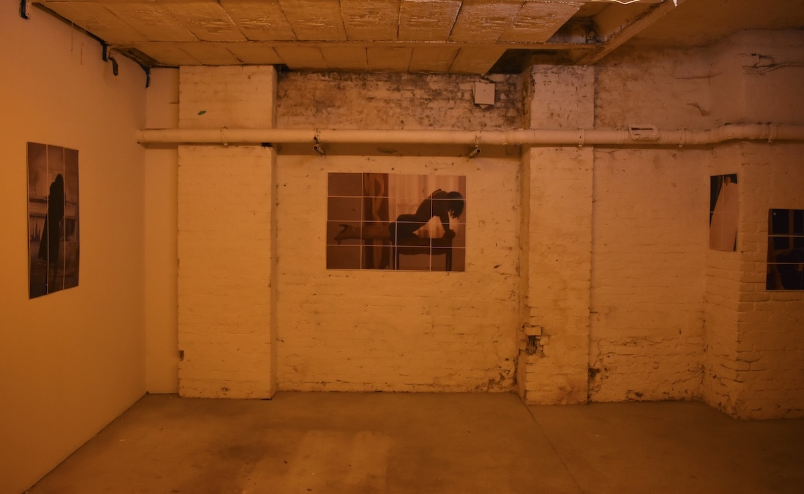
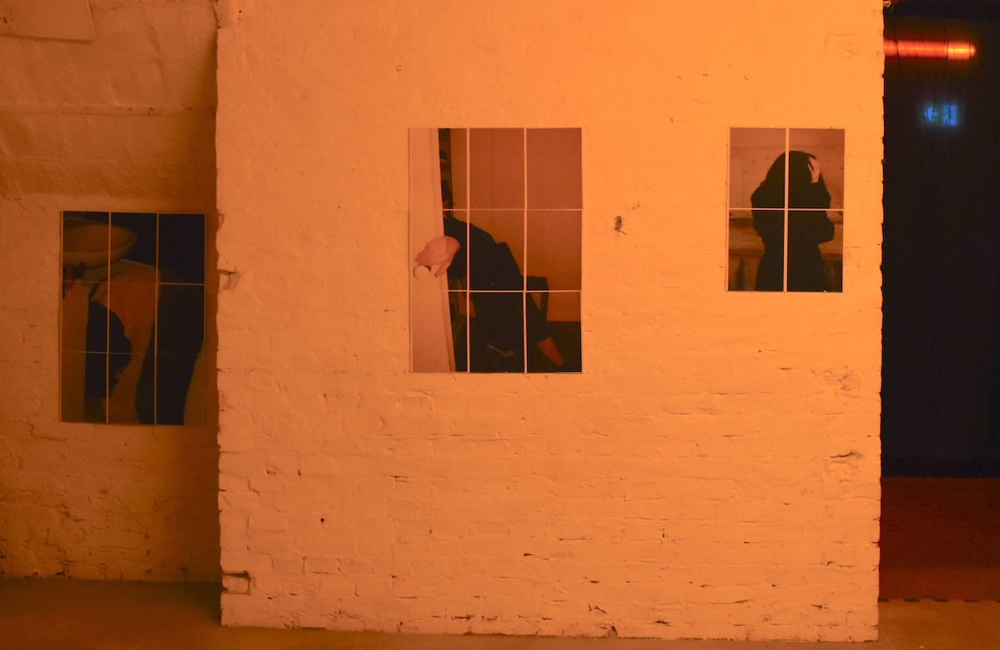
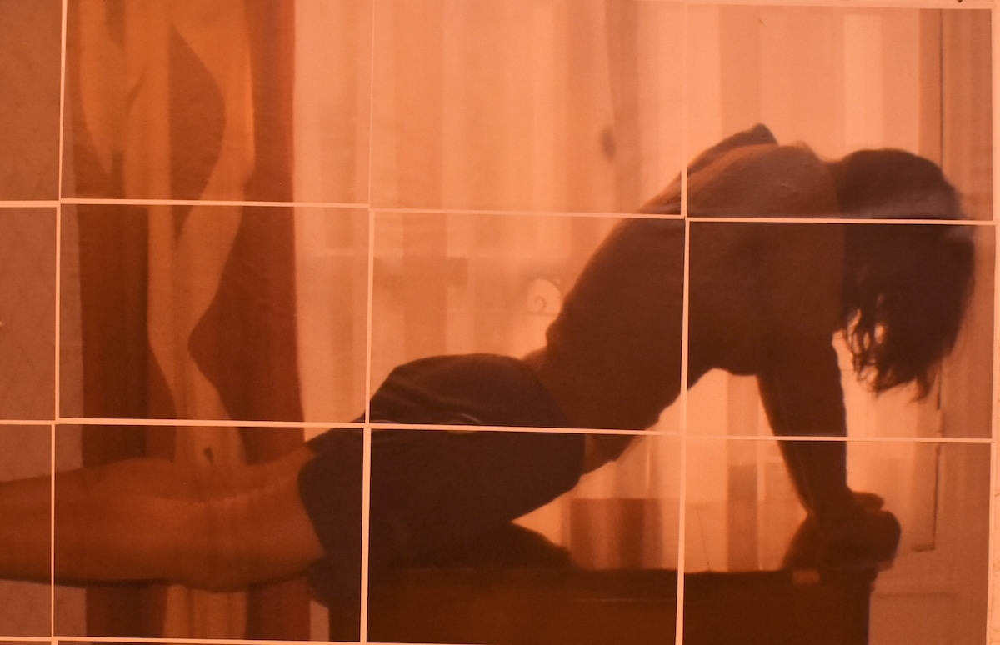
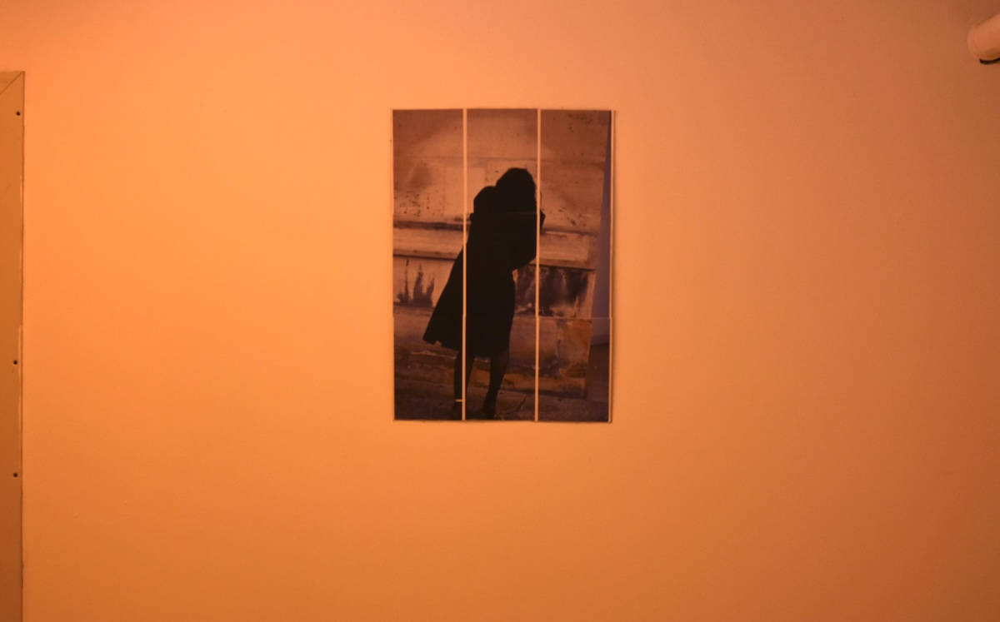

PSYCOMANCY, with Keira Fox, at Benny Boys, Berlin 2025





Photos taken in a Paris apartment and the grounds of the Salpêtrière hospital, once
the site of the Asylum and Charcots photographic experiments.
It is the political problem of the spectacular interest paid by the observed in return for
the “hospitality” (the hospital’s capitalization) that he enjoys as a patient. It is the
problem of the violence of seeing in its scientific pretensions to experimentation on
the body.
Didi Huberman Georges, Invention of Hysteria, 2003